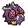
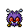
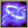
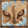
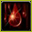
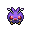

Pokédex / #048

Venonat #048
BugPoison
Its eyes act as radar, enabling it to be active in darkness. The eyes can also shoot powerful beams.
Generation 1 · Kanto

Stats
| Attack | 55 | |
|---|---|---|
| Defense | 50 | |
| Sp. Atk | 40 | |
| Sp. Def | 55 |
In the wild
| Wild level | 18–28 |
|---|---|
| HP | 60 |
| Experience | 12 |
| Egg groups | Bug |
Evolution
- Evolves into Venomoth at level 31.
Moves
| Level | Move | Type | Category | Power | Energy | Cooldown | Effect | |
|---|---|---|---|---|---|---|---|---|
| 1 | Tackle | Normal | Physical | 15 | 15 | 1s | Tackle is one of the most common and basic moves a Pokemon learns. It deals damage with no additional effects. | |
| 1 |  | Disable | Normal | Status | – | 100 | 120s | Disable causes the previous move the target used to be disabled for 100 seconds. If the target has not used any move, then will be random. |
| 1 |  | Foresight | Normal | Status | – | 70 | 60s | Foresight removes the Ghost type's immunity to Fighting-type and Normal-type moves for any moves used against the target. |
| 5 | Supersonic | Normal | Status | – | 20 | 14s | Supersonic causes the target to become confused. | |
| 11 | Confusion | Psychic | Special | 50 | 60 | 12s | Confusion deals damage and has a 10% chance of confusing the target. | |
| 13 | Poison Powder | Poison | Status | – | 30 | 20s | Poison Powder poisons the target. | |
| 17 | Psybeam | Psychic | Special | 65 | 70 | 16s | Psybeam deals damage and has a 10% chance of confusing the target. | |
| 23 | Stun Spore | Normal | Status | – | 55 | 10s | Stun Spore paralyzes the target. | |
| 25 | Signal Beam | Bug | Special | 75 | 85 | 17s | Signal Beam deals damage and has a 10% chance of confusing the target. | |
| 29 | Sleep Powder | Normal | Status | – | 85 | 100s | Sleep Powder puts the target to sleep. | |
| 35 |  | Leech Life | Bug | Physical | 20 | 35 | 7s | Leech Life inflicts damage, and up to 50% of the damage dealt to the target is restored to the user as HP. |
| 37 | Zen Headbutt | Psychic | Physical | 80 | 80 | 15s | Zen Headbutt deals damage and has a 20% chance of causing the target to flinch. | |
| 41 | Poison Fang | Poison | Physical | 50 | 55 | 8s | Poison Fang inflicts damage and has a 30% chance of badly poisoning the target. | |
| 47 | Psychic | Psychic | Special | 90 | 100 | 21s | Psychic deals damage and has a 10% chance of lowering the target's Special Defense by one stage. |
Field abilities
FindFlash
Special abilities
CompoundeyesTinted Lens
Egg moves
AgilityBaton PassBug BiteGiga DrainMorning SunRage PowderScreechSecret PowerSignal BeamSkill SwapToxic Spikes
Technical machines
BideDouble EdgeDouble TeamGiga DrainMega DrainMimicPsychicPsywaveRageReflectRestSludge BombSolar BeamSubstituteSwiftTake DownToxic
Drops
| Item | Amount | Chance | |
|---|---|---|---|
| venom pendant | 1 | 40% | |
| insect antenna | 1 | 13.3% | |
| onigiri | 1–3 | 4.5% | |
 | venonat doll | 1 | 0.1% |
| Insect Plate | 1 | 0.002% | |
| Toxic Plate | 1 | 0.002% |